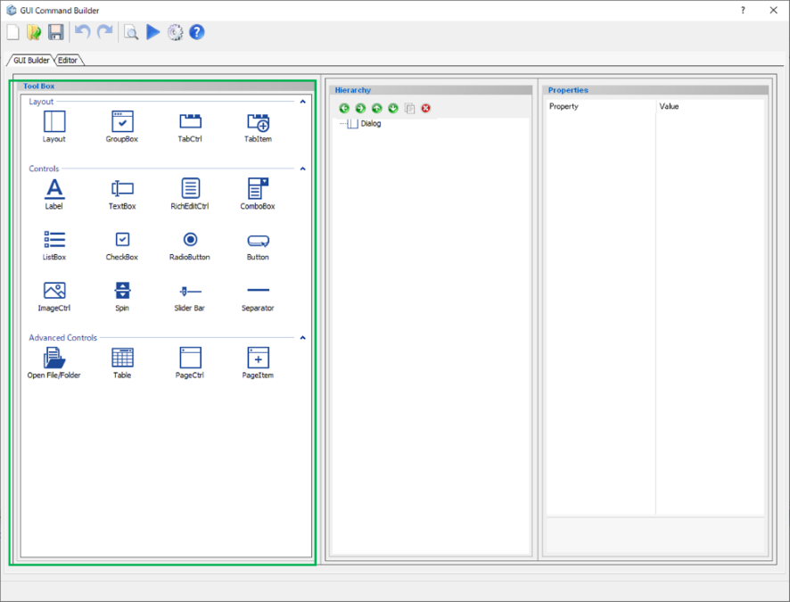
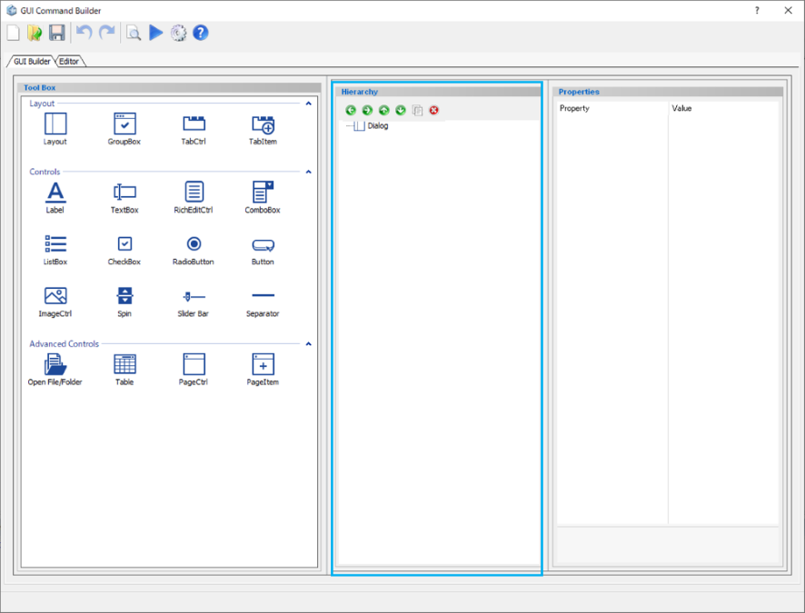
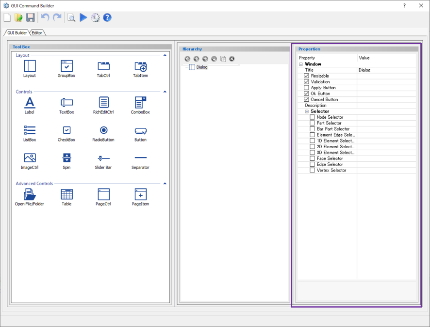

GUI Command Builder¶
GUI Command Builder is an interactive builder of PSJ-GUI, help making Jupiter dialog or wizard by drag and drop operations. User hence does not need to know Python programming language to make UI components in Jupiter.
Tool Box Window¶
Contain all the components used to create dialogs and wizards.

Icon |
Name |
Description |
|---|---|---|
Layout |
Create a layout to arrange components inside |
|
Group Box |
Create a group box which can contain some components |
|
Tab Control |
Create a tab container |
|
Tab Item |
Create a tab inside the tab container |
|
Label |
Create a label |
|
Text Box |
Create a text box |
|
Rich Edit Control |
Create a text box that can be entered in various data formats and multiple lines |
|
Combo Box |
Create a combo box |
|
List Box |
Create a list box |
|
Check Box |
Create a check box |
|
Radio Button |
Create a radio button |
|
Button |
Create a button |
|
Image Control |
Create an image container |
|
Spin |
Create a spin button |
|
Slider Bar |
Create a slide bar |
|
Separator |
Create a separator line |
|
Open File/Folder |
Create a open file/folder selection |
|
Table |
Create a table |
|
Page Control |
Create a page container (used for wizard) |
|
Page Item |
Create a page inside the page container (used for wizard) |
Below is the detail properties for each component:
Hierrachy Window¶
All components in use are displayed in a tree format. User can change the position, duplicate or delete components.

Icon |
Name |
Description |
|---|---|---|
Move item out of current container |
Move the selected component out of the current container which it is being belong to |
|
Move item into next container |
Move the selected component into the above container |
|
Move item forward one level |
Move the selected component up one level but still inside the current container |
|
Move item backward one level |
Move the selected component down one level but still inside the current container |
|
Copy item and insert it |
Duplicate the selected component |
|
Delete selected item |
Delete the selected component |
Properties Window¶
Display all properties of the selected component. The settings of the dialog created can also be set from the Properties window. By selecting a component in the Hierarchy window, user can change its parameters in this Properties window.
